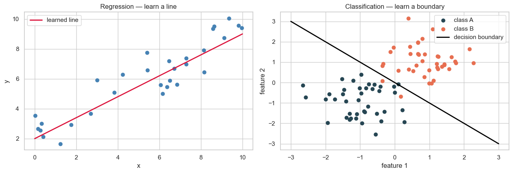
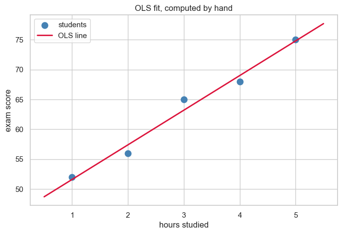
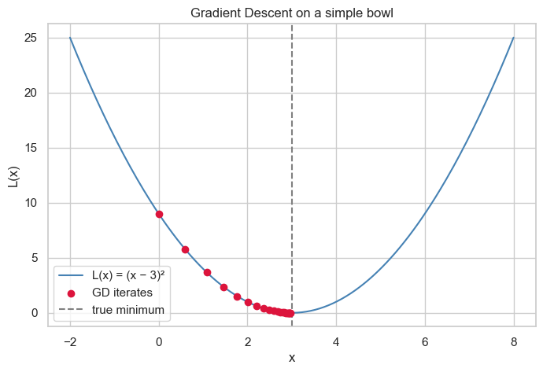
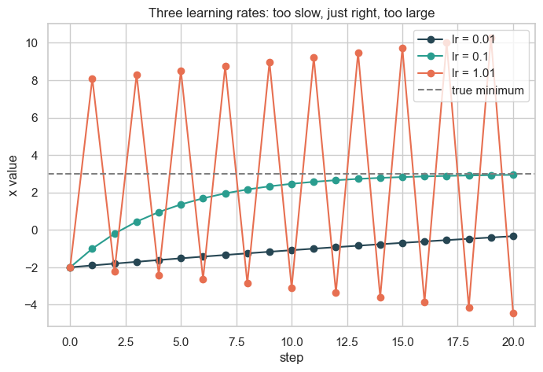
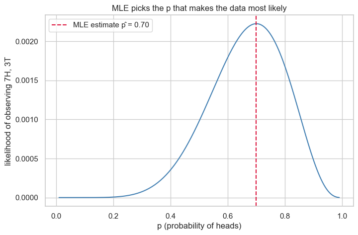
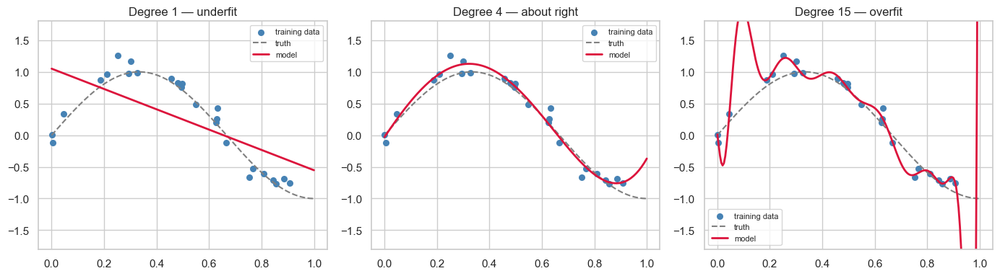
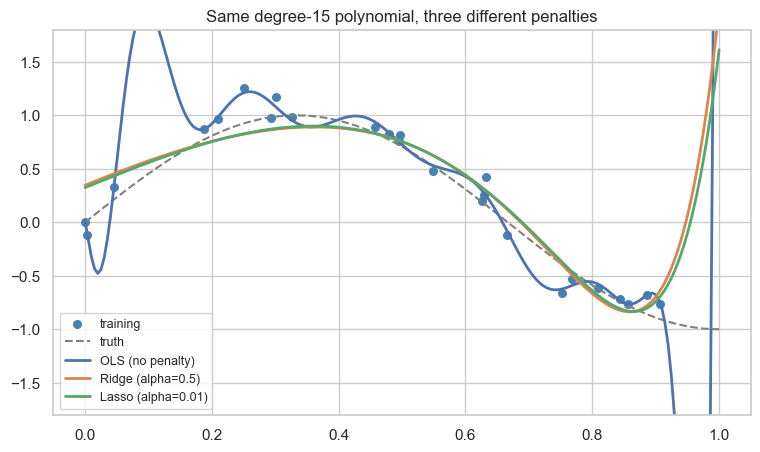
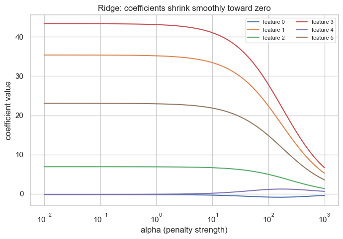
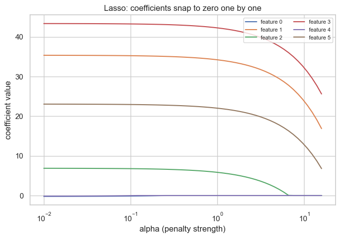

Parameter Estimation, Metrics & Regularization¶
Data 200 · Applied Statistical Analysis · Instructor: Aayush Regmi
In the Linear Regression notebook we used the closed-form OLS formula to fit a line. That worked because the problem was small and the math was friendly.
Real machine-learning problems are not always so kind. This notebook answers a more honest question: how does a model actually learn? We will walk through three different ways to find good parameters, see when each one works, and then look at how to measure a fitted model and how to protect it from overfitting.
Learning Objectives¶
By the end of this notebook you should be able to:
- Explain in plain words what an error is and why ML is the search for parameters that make total error small.
- Describe regression as fitting a line and classification as drawing a decision boundary.
- Compare three approaches to parameter estimation — OLS, Gradient Descent, and MLE — and say when each one shines.
- Derive the OLS solution and explain its limitations.
- Explain what a gradient is and why Gradient Descent is the workhorse of neural networks.
- Connect MLE to Bayes' theorem at a conceptual level.
- Recognise underfitting, overfitting, and the bias-variance tradeoff.
- Pick the right regression metric (MAE, RMSE, R²) for the job.
- Describe how Ridge, Lasso, and Elastic Net fight overfitting.
1. Models Don't Learn by Magic¶
Suppose I make two predictions about the upcoming football season:
- "Arsenal will win the Premier League this year."
- "Arsenal will win the Champions League this year."
Both are confident statements. But how do we know if they are good predictions? We have to wait and see — and then measure how wrong I was.
Let's say we score each prediction on a 0-to-1 scale:
- If I predict win (= 1) and they actually win (= 1), the error is \(|1 - 1| = 0\).
- If I predict win (= 1) and they don't win (= 0), the error is \(|1 - 0| = 1\).
That is all an error is: the gap between what I said and what actually happened.
A machine learning model is just a rule that produces predictions like these — except it does it for thousands of cases at once. Parameter estimation is the search for the rule that makes the total error across all those cases as small as possible.
A small numeric look at "error"¶
Imagine we made guesses about Arsenal's chances over the last five seasons. Each guess is a probability of winning the league (between 0 and 1). The truth is binary: 1 if they actually won, 0 if they did not.
import numpy as np
import pandas as pd
# Five hypothetical seasons. 'predicted' is my probability that
# Arsenal wins the league. 'actual' is what really happened.
predicted = np.array([0.90, 0.80, 0.70, 0.60, 0.95])
actual = np.array([0, 0, 0, 1, 0 ])
errors = np.abs(predicted - actual) # how far off I was
squared_errors = (predicted - actual) ** 2 # punishes big mistakes more
summary = pd.DataFrame({
"predicted": predicted,
"actual": actual,
"|error|": errors,
"error²": squared_errors,
})
summary
| predicted | actual | |error| | error² | |
|---|---|---|---|---|
| 0 | 0.90 | 0 | 0.90 | 0.8100 |
| 1 | 0.80 | 0 | 0.80 | 0.6400 |
| 2 | 0.70 | 0 | 0.70 | 0.4900 |
| 3 | 0.60 | 1 | 0.40 | 0.1600 |
| 4 | 0.95 | 0 | 0.95 | 0.9025 |
print(f"Mean Absolute Error (MAE): {errors.mean():.3f}")
print(f"Mean Squared Error (MSE): {squared_errors.mean():.3f}")
Mean Absolute Error (MAE): 0.750
Mean Squared Error (MSE): 0.601
Two observations:
- Confidence costs you. I was 90–95% sure of a win in seasons they didn't win — those rows produce the largest errors.
- Squared error punishes big mistakes harder. A miss of 0.9 counts as 0.81 under squared error but only 0.9 under absolute error.
Machine learning is, at its core, the job of picking parameters that make this average error as small as possible. The rest of this notebook is about how we do that picking.
2. What a Model Actually Looks Like¶
Most of supervised machine learning is one of two pictures:
- Regression — find a line (or curve) that goes through a cloud of points. The line lets you predict a number.
- Classification — find a boundary that separates two groups of points. The boundary lets you predict a category.
In both cases, the shape of the line or boundary is fixed in advance (e.g. "a straight line"). What we learn are the numbers that pin that shape in place. Those numbers are the parameters.
Setup¶
import numpy as np
import pandas as pd
import matplotlib.pyplot as plt
import seaborn as sns
from scipy import stats
from sklearn.linear_model import (
LinearRegression, Ridge, Lasso, ElasticNet,
)
from sklearn.preprocessing import PolynomialFeatures, StandardScaler
from sklearn.pipeline import make_pipeline
from sklearn.metrics import mean_absolute_error, mean_squared_error, r2_score
sns.set_theme(style="whitegrid")
plt.rcParams["figure.figsize"] = (8, 5)
rng = np.random.default_rng(0)
# Two pictures, side by side.
fig, axes = plt.subplots(1, 2, figsize=(13, 4.5))
# (a) Regression: a line through points
x_reg = rng.uniform(0, 10, 30)
y_reg = 2 + 0.7 * x_reg + rng.normal(scale=1.0, size=30)
axes[0].scatter(x_reg, y_reg, color="steelblue", s=40)
xs = np.linspace(0, 10, 100)
axes[0].plot(xs, 2 + 0.7 * xs, color="crimson", lw=2, label="learned line")
axes[0].set_title("Regression — learn a line")
axes[0].set_xlabel("x"); axes[0].set_ylabel("y"); axes[0].legend()
# (b) Classification: a boundary between two clouds
x_a = rng.normal(loc=[-1, -1], scale=0.7, size=(40, 2))
x_b = rng.normal(loc=[ 1, 1], scale=0.7, size=(40, 2))
axes[1].scatter(x_a[:, 0], x_a[:, 1], color="#264653", s=40, label="class A")
axes[1].scatter(x_b[:, 0], x_b[:, 1], color="#e76f51", s=40, label="class B")
boundary = np.linspace(-3, 3, 100)
axes[1].plot(boundary, -boundary, color="black", lw=2, label="decision boundary")
axes[1].set_title("Classification — learn a boundary")
axes[1].set_xlabel("feature 1"); axes[1].set_ylabel("feature 2"); axes[1].legend()
plt.tight_layout(); plt.show()

Both jobs reduce to the same question: what numbers should I plug into the line / boundary so that it fits the data with the smallest possible error? That question is parameter estimation, and there are three classic ways to answer it.
3. Three Roads to the Same Destination¶
Three classic ways to estimate parameters:
| Approach | What it does | When it shines |
|---|---|---|
| OLS (Ordinary Least Squares) | Solves for the best parameters using a single algebraic formula. | Linear regression on small or medium datasets. |
| Gradient Descent | Walks downhill on the error surface, one small step at a time. | Almost everything else — including neural networks. |
| MLE (Maximum Likelihood Estimation) | Picks the parameters that make the observed data most likely. | Probabilistic models — logistic regression, mixture models, almost all of statistics. |
All three are answering the same question — they just take different doors to get there. Let's open each one.
4. OLS — When Calculus Hands You the Answer¶
For a straight-line regression model
the sum of squared errors is
SSE is a smooth bowl-shaped function of \(\beta_0\) and \(\beta_1\). The bottom of the bowl is where the error is smallest — that is the fit we want.
From calculus, the bottom of a smooth bowl is where the slope is zero. So we set the partial derivatives to zero:
Solving these two equations gives the famous closed-form answer
When we have many features, the same idea written in matrix form gives the compact result
This is OLS. No iteration, no learning rate — one formula and we're done.
A tiny worked example¶
Hours studied vs. exam score, 5 students.
hours = np.array([1, 2, 3, 4, 5], dtype=float)
score = np.array([52, 56, 65, 68, 75], dtype=float)
# Apply the closed-form formulae directly
x_bar, y_bar = hours.mean(), score.mean()
b1 = np.sum((hours - x_bar) * (score - y_bar)) / np.sum((hours - x_bar) ** 2)
b0 = y_bar - b1 * x_bar
print(f"Intercept (b0): {b0:.3f}")
print(f"Slope (b1): {b1:.3f}")
print(f"Fitted line: y = {b0:.2f} + {b1:.2f} * x")
Intercept (b0): 45.800
Slope (b1): 5.800
Fitted line: y = 45.80 + 5.80 * x
plt.scatter(hours, score, s=80, color="steelblue", label="students")
xs = np.linspace(0.5, 5.5, 50)
plt.plot(xs, b0 + b1 * xs, color="crimson", lw=2, label="OLS line")
plt.xlabel("hours studied"); plt.ylabel("exam score")
plt.title("OLS fit, computed by hand"); plt.legend(); plt.show()

Where OLS gets stuck¶
OLS is wonderful when it works, but it has three real limitations:
- The matrix \((X^\top X)^{-1}\) is expensive. Roughly \(O(p^3)\) to invert, where \(p\) is the number of features. Fine for \(p = 10\), ruinous for \(p = 100{,}000\) (think genomics, NLP, or images).
- It breaks when features are redundant. If two columns of \(X\) are nearly identical (e.g. height in cm and height in inches), \(X^\top X\) becomes nearly singular and the "solution" explodes.
- It only works for linear least-squares problems. Logistic regression, neural networks, decision trees — there is no closed form. Calculus alone cannot solve them.
Let's see limitation #2 in action — what happens with two near-copies of the same feature.
# Two columns that are almost identical (think cm vs. inches with rounding noise)
n = 200
x1 = rng.normal(size=n)
x2 = x1 + rng.normal(scale=1e-6, size=n) # nearly a copy
y = 3 * x1 - 2 * x2 + rng.normal(scale=0.5, size=n)
X_bad = np.column_stack([np.ones(n), x1, x2])
# Closed-form OLS
beta_ols, *_ = np.linalg.lstsq(X_bad, y, rcond=None)
print("OLS coefficients:", np.round(beta_ols, 2))
print("Condition number of XᵀX: {:.1e}".format(np.linalg.cond(X_bad.T @ X_bad)))
OLS coefficients: [ -0. 45699.1 -45698.05]
Condition number of XᵀX: 4.4e+12
The condition number is astronomical. Tiny numerical noise gets amplified into huge swings in the coefficients — the answer is essentially random. Gradient Descent, which we meet next, walks past this problem without ever inverting a matrix.
5. Gradient Descent — When You Have to Walk Downhill¶
When the error surface is too complicated for a closed-form answer, we fall back on a much older trick: start somewhere, look at the slope, and step downhill.
What is a gradient?¶
Imagine you are standing on a hillside in thick fog. You cannot see the valley, but you can feel the steepest direction under your feet. Take a small step in the opposite direction (i.e. downhill), then feel the slope again, then step again. Eventually you arrive at the bottom.
The gradient is exactly that "steepest direction" written in calculus. For a function \(L(\beta)\), the gradient is the vector of partial derivatives
It points uphill. So the update rule is to step in the opposite direction:
The number \(\eta\) is the learning rate — it controls the size of each step.
A 1-D toy: minimise \(L(x) = (x - 3)^2\)¶
We know the answer is \(x = 3\). Let's pretend we don't, and let GD find it.
def gd_1d(start=0.0, lr=0.1, n_steps=20):
x = start
history = [x]
for _ in range(n_steps):
grad = 2 * (x - 3) # derivative of (x-3)^2
x = x - lr * grad # step downhill
history.append(x)
return np.array(history)
path = gd_1d(start=0.0, lr=0.1)
xs = np.linspace(-2, 8, 200)
plt.plot(xs, (xs - 3) ** 2, color="steelblue", label="L(x) = (x − 3)²")
plt.scatter(path, (path - 3) ** 2, color="crimson", zorder=5,
label="GD iterates")
plt.axvline(3, color="gray", ls="--", label="true minimum")
plt.xlabel("x"); plt.ylabel("L(x)")
plt.title("Gradient Descent on a simple bowl"); plt.legend(); plt.show()
print(f"Final x after 20 steps: {path[-1]:.4f} (true minimum is 3)")

Final x after 20 steps: 2.9654 (true minimum is 3)
The learning rate is everything¶
Pick \(\eta\) too small → GD crawls and never arrives. Pick it too large → GD overshoots and bounces out of the bowl. Below we run three different rates side by side.
for lr, color in [(0.01, "#264653"), (0.1, "#2a9d8f"), (1.01, "#e76f51")]:
p = gd_1d(start=-2, lr=lr, n_steps=20)
plt.plot(p, label=f"lr = {lr}", color=color, marker="o")
plt.axhline(3, color="gray", ls="--", label="true minimum")
plt.xlabel("step"); plt.ylabel("x value")
plt.title("Three learning rates: too slow, just right, too large")
plt.legend(); plt.show()

- \(\eta = 0.01\) — converges, but very slowly.
- \(\eta = 0.1\) — the sweet spot: smooth, fast descent.
- \(\eta = 1.01\) — overshoots and diverges — the steps blow up.
Tuning the learning rate is one of the recurring chores of modern ML.
Why Gradient Descent powers neural networks¶
GD does not care what the loss function is, as long as you can compute its gradient. That single property is why it powers almost every modern model:
- No closed form needed. Neural-network losses are wildly non-linear; calculus cannot solve them in one step. GD just keeps walking downhill.
- It scales. A single GD step costs \(O(np)\) — linear in the data size. With mini-batches (a small random sample of the data per step), it scales to billions of examples.
- It's general. The same algorithm fits a logistic regression, a 10-layer neural network, and a giant language model. Only the loss function and the parameters change.
When you read about "training" a neural network, what is happening under the hood is millions of tiny gradient-descent steps.
6. MLE — The Probabilistic View¶
OLS minimises an error. Maximum Likelihood Estimation (MLE) flips the question around:
Out of all possible parameter values, which one makes the data we actually saw the most likely?
The simplest possible example: a coin¶
I flip a coin 10 times and get 7 heads, 3 tails. What is the best estimate of the coin's true probability of heads, \(p\)?
Intuition says \(p = 7/10 = 0.7\). MLE confirms it. The likelihood of observing 7 heads in 10 flips, for a given \(p\), is
Whichever \(p\) makes that number biggest is the MLE answer.
ps = np.linspace(0.01, 0.99, 200)
likelihood = ps ** 7 * (1 - ps) ** 3
best_p = ps[np.argmax(likelihood)]
plt.plot(ps, likelihood, color="steelblue")
plt.axvline(best_p, color="crimson", ls="--",
label=f"MLE estimate p̂ = {best_p:.2f}")
plt.xlabel("p (probability of heads)")
plt.ylabel("likelihood of observing 7H, 3T")
plt.title("MLE picks the p that makes the data most likely")
plt.legend(); plt.show()

The peak sits at exactly \(p = 0.7\) — the same answer common sense would have given us.
Where Bayes comes in¶
MLE asks: given the parameters, how likely is the data? Bayes' theorem flips it: given the data, how likely are the parameters?
MLE only uses the likelihood. Bayesian estimation also adds a prior — your prior belief about what reasonable parameter values look like. If you assume a flat prior (all values equally believable before seeing data), Bayes and MLE give the same answer.
Full Bayesian analysis is beyond this course, but this is the link worth remembering: MLE is Bayes without a prior.
7. Underfitting, Overfitting, and the Bias-Variance Tradeoff¶
Once we can fit a model, the next question is: should we fit it harder? A more flexible model can chase every wiggle in the training data — but that doesn't mean it is a better model.
Here are three fits to the same noisy data, generated from a smooth underlying curve \(y = \sin(1.5\pi x)\):
def true_f(x):
return np.sin(1.5 * np.pi * x)
n_sam = 25
x_train = np.sort(rng.uniform(0, 1, n_sam))
y_train = true_f(x_train) + rng.normal(scale=0.15, size=n_sam)
x_grid = np.linspace(0, 1, 200)
fig, axes = plt.subplots(1, 3, figsize=(14, 4))
for ax, deg, title in zip(
axes,
[1, 4, 15],
["Degree 1 — underfit", "Degree 4 — about right", "Degree 15 — overfit"],
):
model = make_pipeline(PolynomialFeatures(deg), LinearRegression())
model.fit(x_train.reshape(-1, 1), y_train)
ax.scatter(x_train, y_train, color="steelblue", s=30, label="training data")
ax.plot(x_grid, true_f(x_grid), color="gray", ls="--", label="truth")
ax.plot(x_grid, model.predict(x_grid.reshape(-1, 1)),
color="crimson", lw=2, label="model")
ax.set_ylim(-1.8, 1.8)
ax.set_title(title)
ax.legend(fontsize=8)
plt.tight_layout(); plt.show()
/Users/aayush/micromamba/envs/stats/lib/python3.10/site-packages/sklearn/linear_model/_base.py:280: RuntimeWarning: divide by zero encountered in matmul
return X @ coef_ + self.intercept_
/Users/aayush/micromamba/envs/stats/lib/python3.10/site-packages/sklearn/linear_model/_base.py:280: RuntimeWarning: overflow encountered in matmul
return X @ coef_ + self.intercept_
/Users/aayush/micromamba/envs/stats/lib/python3.10/site-packages/sklearn/linear_model/_base.py:280: RuntimeWarning: invalid value encountered in matmul
return X @ coef_ + self.intercept_

Read the three plots:
- Underfitting (left). The straight line is too rigid to capture the curve. It will be wrong on training and test data. We say it has high bias — a systematic mismatch between model and reality.
- Just right (middle). A modestly flexible polynomial captures the shape without chasing the noise.
- Overfitting (right). The degree-15 polynomial passes very close to every training point but goes wild between them. It will look great on training data and terrible on new data. We say it has high variance — small changes in the training sample produce wildly different fits.
The Bias-Variance Tradeoff¶
- Bias = how badly your model is systematically wrong because it is too simple.
- Variance = how much your model would change if you trained it on a different sample of the same data.
Total prediction error roughly decomposes as
Simpler models → high bias, low variance.
More complex models → low bias, high variance.
There is a sweet spot in between — not too simple, not too flexible — and the rest of this notebook is about finding it.
8. Regression Metrics — How Good is "Good"?¶
Once a model makes predictions, we need a single number that says how good. Different numbers tell different stories. Three are enough for almost everything:
- MAE — Mean Absolute Error: the average size of a mistake.
- RMSE — Root Mean Squared Error: like MAE, but big mistakes hurt extra.
- R² — proportion of variance explained: how much better is the model than just predicting the mean? (1.0 = perfect, 0 = no better than the mean, negative = worse than the mean.)
A 5-row worked example¶
y_true = np.array([10, 12, 14, 16, 18])
y_pred = np.array([11, 11, 15, 14, 22]) # last prediction is way off
mae = mean_absolute_error(y_true, y_pred)
rmse = np.sqrt(mean_squared_error(y_true, y_pred))
r2 = r2_score(y_true, y_pred)
print(f"MAE = {mae:.3f} (average mistake size)")
print(f"RMSE = {rmse:.3f} (mistakes squared, then square-rooted)")
print(f"R² = {r2:.3f} (1.0 would be perfect)")
MAE = 1.800 (average mistake size)
RMSE = 2.145 (mistakes squared, then square-rooted)
R² = 0.425 (1.0 would be perfect)
Notice RMSE is bigger than MAE — that's the last row, where the model was off by 4. Squaring magnifies that single large miss.
Which metric should I use?¶
| Situation | Use | Why |
|---|---|---|
| Outliers should not dominate | MAE | Treats all errors equally |
| Large errors are extra costly (e.g. predicting flight delays) | RMSE | Squaring punishes big misses |
| You want a single "how good overall?" number to compare models | R² | Easy to interpret as % of variance explained |
9. Regularization — Fighting Overfitting Gently¶
Section 7 showed what overfitting looks like. Regularization is the standard fix: we gently punish the model for being too eager. Specifically, we add a penalty on the size of the coefficients to the OLS loss.
Three flavours dominate practice: Ridge, Lasso, and Elastic Net. Let's see them in action on the same overfit problem from Section 7.
# Same noisy sin-curve data, but fit a degree-15 polynomial with
# three different regularizers.
deg = 15
models = {
"OLS (no penalty)": make_pipeline(
PolynomialFeatures(deg), StandardScaler(), LinearRegression()),
"Ridge (alpha=0.5)": make_pipeline(
PolynomialFeatures(deg), StandardScaler(), Ridge(alpha=0.5)),
"Lasso (alpha=0.01)": make_pipeline(
PolynomialFeatures(deg), StandardScaler(), Lasso(alpha=0.01, max_iter=20000)),
}
plt.figure(figsize=(9, 5))
plt.scatter(x_train, y_train, color="steelblue", s=30, label="training")
plt.plot(x_grid, true_f(x_grid), color="gray", ls="--", label="truth")
for name, model in models.items():
model.fit(x_train.reshape(-1, 1), y_train)
plt.plot(x_grid, model.predict(x_grid.reshape(-1, 1)), lw=2, label=name)
plt.ylim(-1.8, 1.8)
plt.title("Same degree-15 polynomial, three different penalties")
plt.legend(fontsize=9); plt.show()
/Users/aayush/micromamba/envs/stats/lib/python3.10/site-packages/sklearn/linear_model/_base.py:280: RuntimeWarning: divide by zero encountered in matmul
return X @ coef_ + self.intercept_
/Users/aayush/micromamba/envs/stats/lib/python3.10/site-packages/sklearn/linear_model/_base.py:280: RuntimeWarning: overflow encountered in matmul
return X @ coef_ + self.intercept_
/Users/aayush/micromamba/envs/stats/lib/python3.10/site-packages/sklearn/linear_model/_base.py:280: RuntimeWarning: invalid value encountered in matmul
return X @ coef_ + self.intercept_
/Users/aayush/micromamba/envs/stats/lib/python3.10/site-packages/sklearn/utils/extmath.py:203: RuntimeWarning: divide by zero encountered in matmul
ret = a @ b
/Users/aayush/micromamba/envs/stats/lib/python3.10/site-packages/sklearn/utils/extmath.py:203: RuntimeWarning: overflow encountered in matmul
ret = a @ b
/Users/aayush/micromamba/envs/stats/lib/python3.10/site-packages/sklearn/utils/extmath.py:203: RuntimeWarning: invalid value encountered in matmul
ret = a @ b
/Users/aayush/micromamba/envs/stats/lib/python3.10/site-packages/sklearn/linear_model/_base.py:280: RuntimeWarning: divide by zero encountered in matmul
return X @ coef_ + self.intercept_
/Users/aayush/micromamba/envs/stats/lib/python3.10/site-packages/sklearn/linear_model/_base.py:280: RuntimeWarning: overflow encountered in matmul
return X @ coef_ + self.intercept_
/Users/aayush/micromamba/envs/stats/lib/python3.10/site-packages/sklearn/linear_model/_base.py:280: RuntimeWarning: invalid value encountered in matmul
return X @ coef_ + self.intercept_
/Users/aayush/micromamba/envs/stats/lib/python3.10/site-packages/sklearn/linear_model/_base.py:280: RuntimeWarning: divide by zero encountered in matmul
return X @ coef_ + self.intercept_
/Users/aayush/micromamba/envs/stats/lib/python3.10/site-packages/sklearn/linear_model/_base.py:280: RuntimeWarning: overflow encountered in matmul
return X @ coef_ + self.intercept_
/Users/aayush/micromamba/envs/stats/lib/python3.10/site-packages/sklearn/linear_model/_base.py:280: RuntimeWarning: invalid value encountered in matmul
return X @ coef_ + self.intercept_

OLS contorts itself to pass through every noisy point. Ridge and Lasso pull the curve back to something far closer to the true sine wave — even though the model is the same shape (degree 15). The penalty is doing the work.
9.1 Ridge — penalise the squares¶
Ridge minimises
The bigger \(\alpha\), the harsher the penalty, the smaller the coefficients get. They shrink toward zero, but never quite reach zero.
from sklearn.datasets import make_regression
X_r, y_r = make_regression(
n_samples=200, n_features=6, n_informative=4,
noise=8, random_state=0,
)
alphas = np.logspace(-2, 3, 60)
ridge_path = np.array([Ridge(alpha=a).fit(X_r, y_r).coef_ for a in alphas])
plt.figure(figsize=(8, 5))
for j in range(ridge_path.shape[1]):
plt.plot(alphas, ridge_path[:, j], label=f"feature {j}")
plt.xscale("log"); plt.xlabel("alpha (penalty strength)")
plt.ylabel("coefficient value")
plt.title("Ridge: coefficients shrink smoothly toward zero")
plt.legend(fontsize=8, ncol=2); plt.show()

9.2 Lasso — penalise the absolute values¶
Lasso replaces the squared penalty with an absolute-value penalty:
That tiny change has a big consequence: as \(\alpha\) grows, Lasso snaps coefficients to exactly zero one by one. So Lasso doubles as a feature-selection tool — features whose coefficient becomes zero have been dropped from the model.
alphas_l = np.logspace(-2, 1.2, 60)
lasso_path = np.array([
Lasso(alpha=a, max_iter=20000).fit(X_r, y_r).coef_ for a in alphas_l
])
plt.figure(figsize=(8, 5))
for j in range(lasso_path.shape[1]):
plt.plot(alphas_l, lasso_path[:, j], label=f"feature {j}")
plt.xscale("log"); plt.xlabel("alpha (penalty strength)")
plt.ylabel("coefficient value")
plt.title("Lasso: coefficients snap to zero one by one")
plt.legend(fontsize=8, ncol=2); plt.show()

9.3 Elastic Net — the best of both¶
Elastic Net mixes the Ridge and Lasso penalties together. Use it when you want some shrinkage and some feature selection — it tends to behave more sensibly than pure Lasso when several features are correlated.
How do you pick \(\alpha\)?¶
\(\alpha\) is a hyperparameter — it isn't learned from the training data directly. The standard recipe is k-fold cross-validation: try a list of candidate values, score each one on held-out folds of the training data, and pick the value with the best average score. Cross-validation gets a notebook of its own later in the course.
10. Key Takeaways¶
- A model is just a rule that produces predictions; learning is the search for parameters that make the total error small.
- OLS solves linear regression in one shot — fast and exact, but it breaks on big or collinear data and only works for least-squares.
- Gradient Descent walks downhill on the error surface. It is slower than OLS for simple problems but works on almost any loss — which is why it powers neural networks.
- MLE picks the parameters that make the observed data most likely. It is the probabilistic sister of OLS, and it becomes Bayesian estimation once you add a prior.
- Bias is being too simple; variance is being too sensitive. Good models live in the sweet spot. Regularization (Ridge, Lasso, Elastic Net) is how we slide along that tradeoff in practice.
11. Practice Exercises¶
- Error scoreboard. Write your own predicted probabilities for five sporting events of your choice. After the events happen, compute your MAE and RMSE. Which one penalises you more for that one bold prediction that didn't pan out?
- Learning-rate hunt. Re-run the 1-D gradient descent demo with \(\eta \in \{0.001, 0.05, 0.5, 1.0, 1.05\}\). For each, plot the trajectory and label whether it converges, oscillates, or diverges.
- Ridge vs. Lasso intuition. Refit the degree-15 polynomial in Section 9 with \(\alpha = 0.001, 0.1, 10\). Describe in plain words how the curve changes as \(\alpha\) grows. Which \(\alpha\) would you pick by eye, and why?